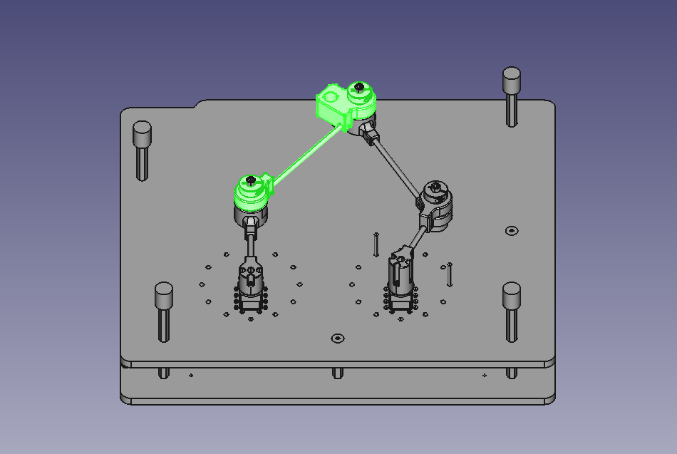

Génération de la description URDF du système 5 barres
Pour visualiser et simuler le système 5 barres avec ROS 2, nous avons besoin de le décrire dans un fichier URDF (Unified Robot Description Format) : la liste de ses pièces (links), des liaisons entre elles (joints) et de leurs modèles 3D.
Nous partons du modèle 3D au format STEP conçu et réalisé par M. Olivier PICCIN.

Modèle 3D de l’assemblage.
Pièces de l’assemblage
L’assemblage comporte cinq pièces principales. Dans l’URDF, nous leur donnons les noms suivants :
Pièce dans le modèle 3D |
Nom dans l’URDF |
Rôle |
|---|---|---|
BATI_ASM |
|
le bâti, qui porte les deux moteurs |
LINK1_ASM |
|
le bras gauche |
LINK2_ASM |
|
l’avant-bras gauche |
LINK3_ASM |
|
l’avant-bras droit |
LINK4_ASM |
|
le bras droit |
Modèle complet : maquette-5-barres_asm.stp
L’outil de travail, le crayon, doit aussi apparaître dans l’URDF. Son support est fixé
sur l’avant-bras gauche (link2) : c’est donc par rapport à cette pièce que nous le positionnons.
Un fichier URDF utilise des modèles 3D au format COLLADA (extension .dae).
Il faut donc découper l’assemblage STEP en cinq pièces, puis convertir chacune en COLLADA.
Extraction des pièces au format STEP
Les pièces peuvent être extraites de l’assemblage avec le logiciel FreeCAD :
Conversion des pièces au format COLLADA
La conversion en COLLADA peut également se faire avec FreeCAD :
Création du fichier URDF
Dans le fichier URDF, chaque modèle 3D est référencé par une balise <mesh>.